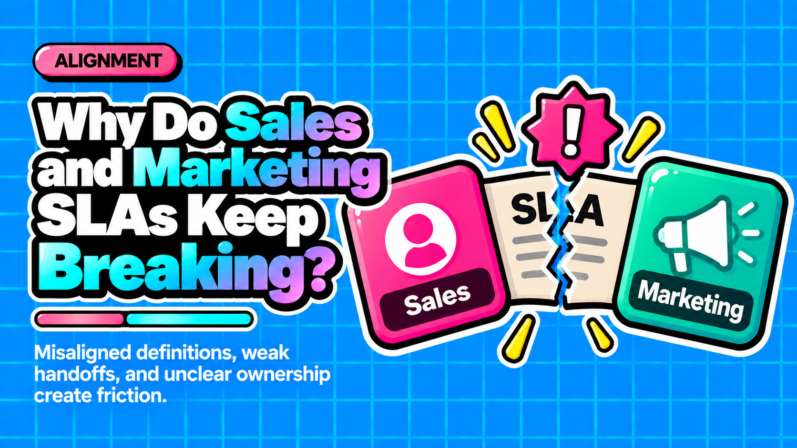

Why Do Sales and Marketing SLAs Keep Breaking?

Direct answer: Sales and marketing SLAs break not because of bad leads or unmotivated reps, but because of missing infrastructure: no shared funnel definitions, no feedback loop on rejected leads, lead scoring that tracks engagement instead of buying intent, and incentive metrics that structurally prevent both teams from caring about the same outcome.
- Only 43% of B2B companies have a formal sales and marketing SLA in place, and just 8% describe their alignment as strong.
- Lead scoring models collapse fit, intent, and readiness into one number, producing scores that track engagement rather than purchase probability.
- Without a Sales Accepted Lead stage, MQL rejections happen silently and no one learns why pipeline is leaking.
- Misaligned teams can lose up to 60% of leads at handoff, costing 10% or more of annual revenue.
- Aligned teams with behavioral scoring achieve MQL-to-SQL conversion rates of 39 to 40%, three times the industry average, without increasing spend.
Questions this article answers
- What does the surface-level blame cycle between sales and marketing actually reveal?
- Why does marketing owning the MQL definition create a structural conflict?
- How does conflating engagement with buying intent break lead scoring?
- Why does skipping the Sales Accepted Lead stage cause pipeline to leak silently?
- Plus 6 FAQs answered below
What does the surface-level blame cycle between sales and marketing actually reveal?
The visible symptom of misalignment is a collapsing MQL-to-SQL conversion rate and a recurring blame cycle, but the root causes sit beneath the surface in the wiring between both teams.
The average B2B MQL-to-SQL conversion rate sits at roughly 13%. For every 10,000 website visitors, B2B companies generate approximately 230 leads, 71 MQLs, and only 9 SQLs, meaning 87 out of 100 MQLs will never become an SQL.
When that rate collapses, both teams notice immediately and finger-pointing begins. Sales says the leads are garbage. Marketing says sales never works them. Both complaints are partly right.
Most companies respond by drafting an SLA document, but without a written contract that specifies what marketing delivers and what sales commits to in return, the document sits in a shared folder and alignment stays aspirational. Only about 8% of B2B companies describe their sales and marketing alignment as strong, and just 43% have any formal SLA in place at all.
Why does marketing owning the MQL definition create a structural conflict?
When marketing controls the MQL definition and is measured on lead volume, it optimizes for form fills rather than pipeline quality, producing leads that sales consistently rejects.
The MQL definition is set by marketing, governed by marketing, and measured by marketing. Marketing sets the scoring model and decides which behaviors trigger MQL status. When the incentive is lead volume, budget flows toward channels that generate the most form fills, not the channels that generate the most SQLs.
The downstream result is predictable:
- 68% of B2B organizations lack clearly defined, shared funnel stage definitions.
- Only 44% of MQLs are ever accepted by sales.
Every rejected MQL represents real invested budget: paid media, content production, nurture sequences, and SDR time. The definition of a qualified lead cannot be owned by the team that is measured on generating as many of them as possible.
How does conflating engagement with buying intent break lead scoring?
Most lead scoring models award points for opens, clicks, and downloads, producing high scores for contacts who are researching but have no urgency to buy, which wastes rep time and distorts pipeline forecasts.
Fit, intent, and readiness are three separate signals. Collapsing them into one number produces scores that track engagement, not purchase probability.
What marketing sees: behavior, interaction, and engagement with your content.
What sales needs: urgency, internal decision-making authority, budget, and timing.
Those perspectives are rarely in sync. A contact can stack up enough webinar attendances and whitepaper downloads to climb the priority queue, get called by a rep, and say they are just researching.
The problem is compounded by the reactivity of first-party scoring. Traditional models only see activity that touches your brand directly. Yet buyers conduct significant research anonymously before ever visiting a vendor website, reading third-party content, comparing competitors, and consulting peers long before completing a form.
Lead scoring tells you someone engaged with you. Intent data tells you whether someone is engaging with the category itself. By the time a contact appears in the CRM, the decision-making process may already be well underway.
Why does skipping the Sales Accepted Lead stage cause pipeline to leak silently?
Without a SAL stage, MQL rejections happen with no data attached, so teams measure a conversion drop they cannot diagnose and never learn what the actual qualification gap is.
The SAL stage is where the qualification SLA actually lives. It defines:
- How fast sales must respond to an MQL
- What criteria reps are evaluating
- What happens when they reject a lead and why
Remove that stage and you remove accountability. The rejection happens silently, with no structured reason recorded in the CRM.
The mechanics of rejection matter as much as the rejection itself. Recording structured rejection reasons turns them into data that sharpens the MQL definition over time. Unrecorded rejections are simply leads that disappear without anyone learning from them.
MQL criteria set by marketing and what sales actually wants are often different things. The SAL stage is where that gap becomes visible instead of invisible.
How do separate accountability metrics structurally prevent alignment?
When marketing is measured on lead volume and sales is measured on revenue, neither team has an incentive to make the other's job easier, and the SLA fails regardless of how well it is written.
The root cause of SLA failure is not a bad document. It is separate accountability metrics.
The cost of misalignment is significant:
- Misaligned B2B teams can lose up to 60% of leads in the handoff process, costing 10% or more of annual revenue.
- Aligned teams achieve 24% faster revenue growth and 36% higher customer retention.
- Companies with strong alignment and behavioral scoring reach MQL-to-SQL conversion rates of 39 to 40%, three times the industry average, without increasing marketing spend.
The structural fix requires a shared metric. Marketing owns pipeline sourced. Sales owns pipeline worked and converted. Both share accountability for pipeline created, a joint metric that requires both functions to perform.
Beyond the shared metric, the SLA must be governed with discipline:
- Weekly: SLA compliance, speed-to-touch, MQL volume
- Monthly: outcome metrics and conversion rate trends
- Quarterly: full SLA recalibration, including ICP updates, new product motions, or segment shifts
A quarterly review with sales, marketing, RevOps, and SDR leaders evaluates attainment, conversion rates, and rep feedback, then adjusts lead definitions and routing logic accordingly.
The MQL-to-SQL handoff does not fail because of bad leads or unmotivated reps. It fails because of missing infrastructure. Lead lifecycle definitions, routing logic, and SLAs configured in the stack fix it. Workshops do not.
Frequently asked questions
What percentage of B2B companies have a formal sales and marketing SLA?
Only 43% of B2B companies have any formal SLA in place between sales and marketing, and just 8% describe their alignment as strong.
What is a Sales Accepted Lead and why does it matter?
A Sales Accepted Lead is a funnel stage that sits between MQL and SQL where sales formally accepts or rejects a lead and records the reason. Without it, rejections happen with no data attached and teams cannot diagnose why pipeline is leaking.
Why is lead volume a bad primary metric for marketing in a RevOps model?
When marketing is measured on lead volume, it optimizes for form fills rather than pipeline quality. Only 44% of MQLs are ever accepted by sales, meaning the majority of marketing spend generates leads that never convert.
What is the difference between lead scoring and intent data?
Lead scoring tracks engagement with your own brand, such as opens, clicks, and downloads. Intent data tracks whether a buyer is actively engaging with the broader category across third-party sources. Lead scoring tells you someone engaged with you; intent data tells you whether they are in an active buying cycle.
How should a sales and marketing SLA be governed to stay effective?
Operational metrics like SLA compliance and speed-to-touch should be monitored weekly, outcome metrics reviewed monthly, and the full SLA recalibrated quarterly or after any major go-to-market change such as an ICP update or new product motion.
What shared metric can replace separate lead volume and revenue targets?
Pipeline created is the joint metric that works. Marketing owns pipeline sourced, sales owns pipeline worked and converted, and both share accountability for pipeline created, giving both teams an incentive to make the handoff succeed.
Want an SLA and lead lifecycle model built into your own stack?
Contact →